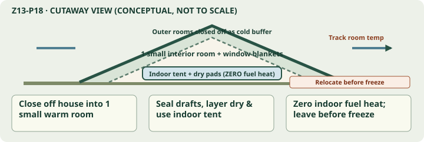

Z13-P18 · Home survival and utilities · New manuscript
Consolidate household heat into one safe insulated interior room
Preserve survivable indoor warmth safely during multi-day winter blackouts without resorting to hazardous indoor combustion.
When it applies · Sub-zero Upper Midwest or winter residential heating failures while awaiting restoration or safe daylight evacuation.
Equipment · Interior small room (ideally south-facing/minimal windows), blankets/quilts, sleeping bags, insulated pads/mattresses, dry wool layers, and indoor thermometer.

Actions
- Close off unused rooms early while the house still holds residual heat, moving all household members and pets into one small, well-insulated interior room with minimal exterior glass; hang thick blankets over windows and roll towels tightly along door bottoms to cut drafts.[U10, E05]
- Pitch a small fabric tent or blanket canopy over mattresses/sleeping pads inside the room to trap body heat safely WITHOUT any fuel-burning heat inside, dressing everyone in dry layered wool/synthetic clothing, hats, and warm socks.[U10, E05, E10]
- Track actual indoor room temperature continuously with a thermometer and monitor infants, older adults, and medically vulnerable occupants closely—abandoning to a heated warming center BEFORE indoor temperatures plunge toward freezing or hypothermia risk.[U10, U17, T03]
Failure recognition · Spreading family members across cold drafty bedrooms overnight or lighting a camp stove inside an indoor tent to "take the chill off."[U10, C05]
Verify · Confirm unused rooms shut off, draft barriers hung, zero combustion devices inside, and thermometer watched against pre-set evacuation temperature.[U10, U17, C16]
Stop or change course · Indoor room dropping toward unsafe cold levels (especially with infants/elders) or any signs of shivering/confusion triggers prompt relocation to heated shelter.[U10, U17, T03]
Evidence and editorial notes
- C05 · CPSC · Portable Heaters and Camping Equipment (current web edition)
- Section: Carbon monoxide poisoning from portable camping equipment · Conditions: Tents, campers, vehicles and other enclosed spaces
Support: Fuel-burning camping equipment can lead to fatal carbon monoxide buildup in enclosed spaces.
Limitations: High altitude increases incomplete combustion and CO production. · Conflicting evidence: None; aligns with CDC-CO and NPS guidance.
Editorial note: Hard-stop prohibition against indoor/vestibule/tent combustion. · Specialist reviewer: Carbon monoxide safety and emergency medicine
Primary source · checked 2026-11-24 - C16 · CDC · Carbon Monoxide Poisoning Basics (current web edition)
- Section: Carbon Monoxide Poisoning Basics > Sources and Prevention · Conditions: Any enclosed or semi-enclosed structure, garage, porch, tent, or vehicle
Support: Never burn charcoal, operate camp stoves, or run fuel-burning heaters inside homes, garages, tents, or vehicles even with doors or windows partly open.
Limitations: Vent cracks and open garage doors do not prevent lethal CO accumulation. · Conflicting evidence: Refutes dangerous myth that cracking a tent vent or garage door makes indoor combustion safe.
Editorial note: Hard-stop rule across all Z02 ventilation and Z03 combustion cards. · Specialist reviewer: Carbon monoxide safety and emergency medicine
Primary source · checked 2026-11-24 - E05 · NWS · What To Do If You're Caught in a Winter Storm (current web edition)
- Section: Outside and find shelter · Conditions: Cold, wet or windy winter conditions
Support: Block wind, stay dry and keep off cold ground. Keep exposure reduction separate from making a fire.
Limitations: Improvised windbreaks do not provide rated thermal protection or snow-load capacity. · Conflicting evidence: None; aligns with CDC-H.
Editorial note: Separates wind, ground, and moisture heat-loss pathways. · Specialist reviewer: Cold-weather shelter specialist
Primary source · checked 2026-11-24 - E10 · NWS · What To Do If You're Caught in a Winter Storm (current web edition)
- Section: Outside > Protect yourself from frostbite and hypothermia · Conditions: Outdoor winter storm
Support: Keep clothing dry and avoid overexertion. Wetness accelerates cooling.
Limitations: Cotton retains moisture and accelerates conductive and evaporative heat loss. · Conflicting evidence: None; reinforces moisture-management layering.
Editorial note: Links sweat management to overnight insulation integrity. · Specialist reviewer: Cold-weather shelter and wilderness medicine
Primary source · checked 2026-11-24 - T03 · CDC · Preventing Hypothermia (current web edition)
- Section: Warning signs; What to do · Conditions: Cold exposure and suspected hypothermia
Support: Confusion, slurred speech and drowsiness are warning signs. Obtain medical attention and protect from further cold.
Limitations: Shivering may stop as hypothermia worsens; absence of shivering is not reassurance. · Conflicting evidence: None; aligns with WMS cold guidelines.
Editorial note: Core neurological red-flag trigger for stopping activity and calling rescue. · Specialist reviewer: Wilderness medicine
Primary source · checked 2026-11-24 - U10 · FEMA / Ready.gov · Winter Weather (current web edition)
- Section: Winter Household Resilience > Frozen Pipes, Ice Dams, and Heating Loss · Conditions: Sub-zero Upper Midwest winter outages and prolonged cold snaps
Support: Prevent burst pipes by insulating exposed lines, keeping cabinet doors open, shutting off and draining water lines per plumbing guidance if indoor temperatures drop toward freezing, and consolidating household occupants into one safe insulated interior room.
Limitations: Draining hydronic boilers or gas water heaters requires exact manufacturer/plumber steps to prevent equipment damage or gas leaks. · Conflicting evidence: None; regionalizes winter home defense for Minnesota conditions.
Editorial note: Anchors winter pipe protection, thermal-zone consolidation, and abandonment thresholds. · Specialist reviewer: Residential plumbing, HVAC, and cold-weather emergency management
Primary source · checked 2026-11-24 - U17 · FEMA / Ready.gov · Evacuation (current web edition)
- Section: Household Evacuation Thresholds When Utilities Fail · Conditions: Uninhabitable indoor temperatures, sewage backup, persistent CO alarm, or structural/utility hazard
Support: Establish clear pre-agreed exit triggers to relocate to a warming center, hotel, or relatives BEFORE indoor freezing, carbon monoxide alarms, medical-device battery exhaustion, or impassable blizzard roads trap occupants.
Limitations: Waiting until indoor pipes burst or batteries hit zero removes safe travel options. · Conflicting evidence: None; aligns with T13 and E14.
Editorial note: Defines objective household abandonment thresholds in Z13. · Specialist reviewer: Emergency management and cold-weather operations
Primary source · checked 2026-11-24
Source lineage · FEMA Ready.gov Winter Weather and NWS Cold Safety; new manuscript · Classification · New manuscript.